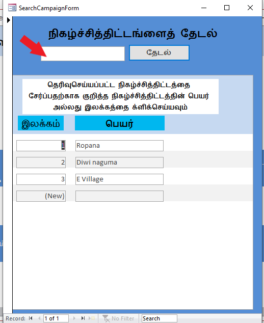
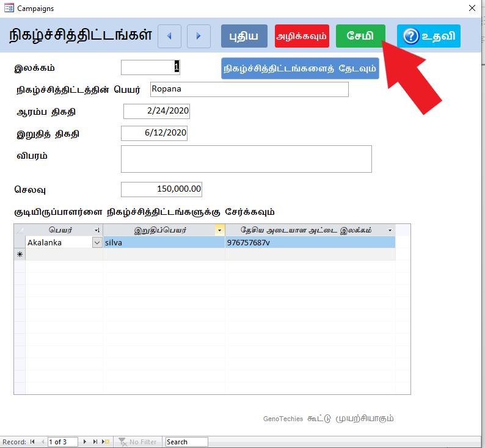
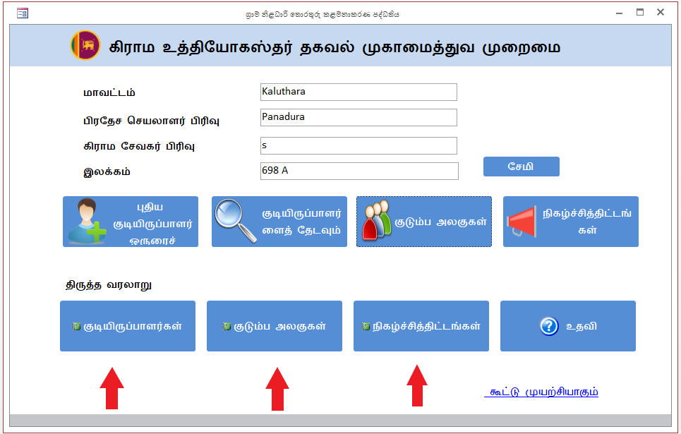

கிராம உத்தியோகஸ்தர்களின் அடிப்படை தகவல்களை முகாமைத்துவம் செய்யும் முறைமை
பயனர் உதவி (User Documentation) : முதலாம் அலகு
உங்களது கிராம உத்தியோகஸ்தர் பிரிவுடன் தொடர்புடைய அடிப்படைத் தகவல்களை சேர்த்தல், வதிவாளர்கள், குடும்ப அலகுகளுடன் தொடர்புடைய தரவுகளை சேர்த்தல், தேடுதல், மாற்றுதல் அல்லது நீக்குதலுடன் தொடர்புடைய விடங்கள் பயனர் உதவியினுள் (User documentation) உள்ளடக்கப்பட்டுள்ளது.
கிராம உத்தியோகஸ்தர்களுக்காகவே நிர்மாணிக்கப்பட்ட இத்தகவல் முறைமையினூடாக நாளாந்த கடமைகளின் போதான தகவல்களைத் தேடுதல் உள்ளடங்களான அடிப்டைத் தகவல்களை முகாமைச் செய்யும்
முறைமைகளை நிறுவுதல்( Installation ) அணுகுங்கள்
கீழே காட்டப்பட்டுள்ளது நீங்கள் தமிழ் திருத்தத்தினை திறக்கும்போது கிடைக்கப்பெறும் பிரதான இடைமுகப்பாகும்.
கிராம உத்தியோகஸ்தர் பிரிவுடன் தொடர்புடைய அடிப்படைத் தவல்களை சேர்த்தல்

- முதலாவது நீங்கள் செய்ய வேண்டியது மேலே படத்தில் காட்ப்பட்டுள்ளவாறாக உங்களது கிராம உத்தியோகஸ்தர் பிரிவுடன் தொடர்புடைய தகவல்களை பதிவு செய்து சேமித்தல் பட்டனை அழுத்துவதாகும்.
- இத்தகவல் முறைமையினை பயன்படுத்தும் ஒவ்வொரு சந்தர்ப்பத்திலும் ஏதேனும் அல்லது அச்சந்தர்ப்பத்திற்குரிய பிரச்சினையொன்று காணப்படின், கீழே காட்டப்பட்டுள்ளவாறாக இடை முகப்பில் காணப்படும் உதவி எனும் பட்டனை அழுத்துவதன் மூலம் உதவி ஆவணக்கோப்பில் குறிப்பிடப்பட்டுள்ள பிரச்சினைக்கு அவசியமான உதவியினைஅணுக முடியும்.

புதிய வதிவாளர் ஒருவரை தரவு களஞ்சியத்தினுள் சேர்த்தல்
- இரண்டாவதாக புதிய வதிவாளர் ஒருவரை தரவுக் களஞ்சியத்தினுள் சேர்ப்பதற்காக " புதிய " எனும் பட்டனை அழுத்தவும்.

- இங்கு இலக்கம் சுயமாகயாக பதிவு செய்யப்படும். அதற்காக இலக்கங்கள் பதிவு செய்யத் தேவை இல்லை.
- வதிவாளர்களுக்கிடையில் இலக்க ஒழுங்குகள் முன்னோக்கி அல்லது பின்னோக்கி மாறுபடுவதற்காக மேலே இடைமுகப்பு 1 இல் காட்டப்பட்டுள்ளவாறாக சிறிய அம்புக்குறிகள் இரண்டினை பயன்படுத்துங்கள்
- பெயர், முதல்ப்பெயர் அடங்கிய எந்தவொரு தகவலினையும் தமிழில் அல்லது ஆங்கிலத்தில் பதிவு செய்ய முடியும்.
- 18 வயதிற்கு வயதிற்கு குறைந்த நபர்களின் தரவுகளை பதிவு செய்ய வேண்டிய தேவை காரணமாக அடையாள அட்டை கட்டாயமாக்கப்பட்டுள்ளது..
- பிறந்த திகதி கட்டாயமாகும். இல்லையெனில் சேமிக்க முடியாது. பிறந்த திகதியினை பதிவு செய்யும்போது, பின்வரும் இடைமுகப்பில் காட்டப்பட்டுள்ளவாறாக பதிவு செய்ய முடியும்..

- அவ்வாறு பதிவு செய்து அதற்கு கீழாக காணப்படும் கைத்தொலைபேசி இலக்கத்தை இடுவதற்காக காணப்படும் பெட்டியினை தெரிவு செய்யும்போது பிறந்த திகதியானது கீழே காட்டப்பட்டுள்ளவாறாக ஒழுங்குமுறையில் தோன்றும்..

- தொலைபேசி இலக்கத்தை டய்ப் செய்யும்போது இலக்கங்களை வேறுபடுத்தாது இடைமுகப்பபில் காட்டப்பட்டுள்ளவாறு டய்ப் செய்யவும்.

- குடும்ப அலகுகளை பதிவு செய்வதற்காக கீழே இடைமுகப்பில் காட்டப்பட்டுள்ளவாறாக குடும்ப அலகை தேடல் எனும் பட்டனை அழுத்துவதன் மூலம் உங்களுக்கு குடும்ப அலகினை தேடுவதுடன் தொடர்புடைய இடைமுகப்பினை அணுக முடியும். அதனூடாக நீங்கள் முன்னர் சந்தர்ப்பமொன்றில் முறைமையில் பதிவு செய்த குடும்ப அலகினை மேலே கூறப்பட்ட வதிவாளர்கள் பதிவு செய்த இடைமுகப்பிற்கு சேர்க்க முடியும்.


- குடும்ப அலகைத் தேடல் எனும் பட்டனைனை அழுத்துவதன் மூலம் தோன்றும் கீழுள்ள இடைமுகப்பினூடாக உங்களுக்கு தேவையான குடும்ப அலகினைத் தேடிக்கொள்ள முடியும்.அவ்வாறு தேடுவதற்காக கீழுள்ள இடைமுகப்பில் காட்டப்பட்டுள்ள பெட்டியினுள் நீங்கள் தேட வேண்டிய குடும்ப அலகின் பெயரைக் குறிப்பிட்டு அதற்கு வலப்புறமாக காணப்படும் ‘தேடல்' எனும் பட்டனை அழுத்தவும்.
- உங்களுக்கு தேவையான குடும்ப அலகுக்குரிய பெயரின் பகுதியை மாத்திரம் டய்ப் செய்வதனூடாக குறித்த குடும்ப அலகை த் தேடிக்கொள்ள முடியும்.
- அவ்வாறுத் தேடிக்கொண்ட குடும்ப அலகானது மேலே குறிப்பிடப்பட்ட வதிவாளர்கள் பதிவுச்செய்யும் படிவத்தில் பதிவதற்காக குடும்ப அலகின் பெயரினை க்ளிக் செய்வதனூடாக மேள்கொள்ளலாம்.
- அதனை சிலக்ட் செய்த பின்னர் குடும்ப அலகிற்குரிய இலக்கமானது பின்வருமாறு உள்வாங்கப்படும்.

- அவ்வாறு அவருக்குரிய குடும்ப அலகானது பதிவு செய்யவில்லையெனின், ' குடும்ப அலகு' என வெற்றிடமாக்கி அதனைப் பின்னர் பதியவும்.
- பதிவுச்செய்யப்பட்ட அங்கத்தவர் குடும்பத்தலைவராயின் மாத்திரம் மேலே காணப்படும் குடும்பத்தலைவர் எனும் சிறிய பெட்டியை க்ளிக் செய்யவும். குடும்பத்தலைவர் எனும் நிலையிலிருந்து நீக்குவதற்காக அப்பெட்டியினை மீளவும் க்ளிக் செய்யவும்.
நீங்கள் இந்த இடைமுகப்பில் அரைவாசியாக தரவுளை பதிவுச்செய்து அதனை க்ளோஸ் செய்தவிடத்து அது சுயமாகவே( Save) சேமிக்கப்படும்.அனைத்து தரவுகளையும் பதிந்து முடிவுறுத்தியதும் பதிந்த தரவுகளை சேமிப்ப்பதற்காக (Save) மேலே 1 இடைமுகப்பில் காட்டப்பட்டுள்ளவாறு ' சேமித்தல்' எனும் பட்டனை அழுத்தவும்.
குடும்ப அலகு
வதிவாளர்கள் சிலரை ஒன்றாறச் சேர்த்து தனி அலகொன்றாக கருதுவதற்கு குடும்மப அலகுகள் அறிமுகப்படுத்தப்பட்டுள்ளது. குடும்ப அலகு பட்டனை அழுத்துவதன் மூலம் குடும்ப அலகினை பதிவுச்செய்வதற்குரிய பின்வரும் இடைமுகப்பினை அணுக முடியும்.

- வதிவாளர்கள் சிலரைச் சேர்த்து தனிக்குடும்பமாக கருதுவதற்கான வசதி இக்குடும்ப அலகு எனும் வசதியினூடாக வழங்கப்பட்டுள்ளது.
- இவ் இடைமுகப்பில் புதிய குடும்ப அலகினை பதிவு செய்துகொள்ளலாம்
- இங்கு இலக்கம் சுயமாகபதியப்படும். அதற்காக இலக்கமொன்றைப் பதியத்தேவையில்லை
- புதிய குடும்ப அலகொன்றை பதிவதற்காக மேலே இடைமுகப்பில் குறிப்பிடப்பட்டுள்ளவாறு ' புதிய' எனும் பட்டனை அழுத்தவும்
- நிகழ்ச்சித்திட்டங்களுக்கிடையில் இலக்க ஒழுங்கானது முன்னோக்கி அல்லது பின்னோக்கி மாற்றமடைவதற்காக 1 இல் காட்டப்பட்டுள்ள சிறிய அம்புக்குறிகள் இரண்டைப் பயன்படுத்துங்கள்.
- குடும்ப அலகினை தேடல் எனும் பட்டனை அழுத்துவதன் மூலம் கிடைக்கப்பெறும் கீழுள்ள இடைமுகப்பினூடாக உங்களுக்கு தேவையான குடும்ப அலகினைத் தேடிக்கொள்ள முடியும். அவ்வாறு தேடுவதற்காக கீழே இடைமுகப்பில் காட்டப்பட்டுள்ள பெட்டியினுள் நீங்கள் தேட வேண்டிய குடும்ப அலகின் பெயரைக் குறிப்பிட்டு அதற்கு வலப்பபுறமாக உள்ள தேடல் எனும் பட்டனை அழுத்தவும்.
- உங்களுக்குத் தேவையான குடும்ம அலகிற்கான பெயரின் பகுதியை மாத்திரம் டய்ப் செய்வதனூடாக குறித்த குடும்ப அலகினைத் தேடிக் கொள்ளலாம்
- அனைத்து தரவுகளும் பதிந்து முடிவுறுத்திய பின், அப் பதிவுச் செய்யப்ட்ட தரவுகளை சேமிப்பதற்காக (Save) மேலே 2 இடைமுகப்பில் காட்டப்பட்டுள்ளவாறாக சேமித்தல் எனும் பட்டனை அழுத்தவும்
- இதனூடாக குடும்ப அலகினைத் தேடி அவற்றை மீள்ப்பதிவு செய்யக்கூடியதா இருக்கும்
- அதற்காக உங்களுக்கு தேவையான குடும்ப அலகினை தேடல் பட்டனை அழுத்துவதன் மூலம் தோன்றும் இடைமுகப்பினூடாக தேடியப் பினனர் அதனை க்ளிக் செய்வதனூடாக அங்கு முன்னர் பதிவுச் செய்யப்பட்ட தகவல்கள் தோன்றும். அத்தகவல்களை நீங்கள் விரும்பியவாறு மாற்றம் செய்து கொள்ளலாம்.
- நீங்கள் இந்த இடைமுகப்பில் அரைவாசியாக தரவுகளை பதிவுச் செய்து அதனை க்ளோஸ் செய்தவுடன் அது சுயமாகவே (Save) சேமிக்கப்படும்.
தரவுக்களஞ்சியத்தில் புதிதாக பதிவுச்செய்யப்பட்ட வதிவாளர்களைத் தேடுதல்
- களஞ்சியத்திற்கு புதிதாக பதிவுச் செய்த வதிவாளரொருவரை தேடுவதற்காக வதிவாளர்களை தேடல் எனும் பட்டனை அழுத்தவும்

- இங்கு நீங்கள் வதிவாளர்களின் பெயர், முதல்ப்பெயர், அடையாள அட்டை இலக்கம் உள்ளடங்களாக எந்தவொரு துறையையும் உட்செலுத்தி குறித்த வதிவாளர்களை தேடிக்கொள்ள முடியும்.
- அவ்வதிவாளர்களினது மேலதிக தகவல்கள் தொடர்பாக Double click செய்யவும்.
- அதன்போது கீழே காட்டப்பட்டுள்ளவாறான இடைமுகப்பு தோன்றும். அதன் மூலம் வதிவாளர்களை அழித்தல்( Delete) அல்லது தகவல்களை மாற்றம் செய்ய முடியும்
- வதிவாளர் ஒருவரை தரவுக்களஞ்சியத்திலிருந்து நீக்குவதற்காக அழித்தல் எனும் பட்டனை அழுத்திய பின்னர் கீழ்க்கண்டவாறு பெட்டியினுள் ‘Yes' அல்லது ‘No’ எனும் கட்டளையொன்றை கேட்கும். அழிப்பதற்காக கீழே படத்தில் காட்ப்பட்டுள்ளவாறாக 'Yes' என வழங்குதல் வேண்டும்.

- அனைத்து தரவுகளும் பதிவுச்செய்தல், மாற்றங்களின் இறுதியில் தரவுகளைப் சேமிப்பதற்காக (Save) மேலே 1 இடைமுகப்பில் காட்டப்பட்டுள்ளவாறாக சேமித்தல் பட்டனை அழுத்தவும்
- நீங்கள் இந்த இடைமுகப்பிற்கு அரைவாசியாக தரவுகளை பதிவு செய்து அதனை க்ளோஸ் செய்யுமிடத்து அது சுயமாக சேமிக்கப்படும்( Save)
நிகழ்ச்சித்திட்டங்கள்
நிகழ்ச்சித்திட்டங்கள் பட்டனைனை அழுத்தியவுடன் நலன்புரி நிகழ்ச்சித்திட்டங்கள் பதிவு செய்யும் இடைமுகப்பு தோன்றும்.

- புதிய நிகழ்ச்சித்திட்டமொன்றை பதிவு செய்வதற்காக மேலே இடைமுகப்பிலுள்ளவாறாக புதிய பட்டனை அழுத்தவும்.
- இங்கும் முன்னர் போலவே திருத்தம் செய்தல் மற்றும் தேடல்களை மேற்கொள்ள முடியும்.
- நிகழ்ச்சித்திட்டங்களுக்கிடையில் இலக்க ஒழுங்கு முறையில் முன்னோக்கி அல்லது பின்னோக்கி மாற்றமடைவதனால் 1 இல் காட்டப்பட்டுள்ள சிறிய அம்புக்குறிகள் இரண்டினைப் பயன்படுத்துங்கள்
- மேலே நிகழ்ச்சித்திட்டங்களைத்தேடல் எனும் பட்டனை அழுத்துவதன் மூலம் நிகழ்ச்சித்திட்டங்களை தேடுவதனுடன் தொடர்புடைய இடைமுகப்பினுனை அணுக முடியும்

- இதனூடாக முன்னர் பதிவு செய்யப்பட்ட நிகழ்ச்சித்திட்டத்துடன் தொடர்புடைய தகவல்களை மாற்றம் செய்வதனைப்போன்றே அதற்கு புதிய வதிவாளர்களையும் இணைத்துக்கொள்ள முடியும்.
- இங்கு கீழே காட்டப்பட்டுள்ள பெட்டியினுள் தேவையான நிகழ்ச்சித்தின் பெயரைக் குறிப்பிட்டு “ தேடல்” எனும் பட்டனை அழுத்துவதனூடாக தேவையான அந்நிகழ்ச்சித்திட்டம் இலக்கத்துடன் தோன்றும்.பின்னர் இதனை க்ளிக் செய்வதனூடாக அந்நிகழ்ச்சித்திட்டத்திற்கு வதிவாளர்களை சேர்ப்பதனைப் போன்றே அதற்குரிய மாற்றங்களையும் செய்யக்கூடியதாக இருக்கும்

- உறுதிச்செய்வதற்காக முதல்ப்பெயர் மற்றும் தேசிய அடையாள அட்டை இலக்கங்கள் சுயமாகவே பதியப்படும்.
- நீங்கள் இந்த இடைமுகப்பிற்கு அரைவாசியாக தரவுகளை பதிவு செய்து அதனை க்ளோஸ் செய்யின் அது சுயமாகவே ( save) சேமிக்கப்படும்.

- அனைத்து தரவுகளும் பதிந்து முடிவுறுத்திய நிலையில் பதிவு செய்யப்பட்ட தரவுகளை சேமிப்பதற்காக (save) மேலே இடைமுகப்பில் காட்டப்பட்டுள்ளவாறு சேமித்தல் எனும் பட்டனை அழுத்தவும்.
தரவுகளில் மேற்கொள்ளப்பட்ட மாற்றங்களின் வரலாற்றினை பரிசீலித்தல்
தரவுகளில் மேற்கொள்ளப்பட்ட மாற்றங்களின் வரலாற்றினை பரிசீலிப்பதள்காக கீழே இடைமுகப்பில் காட்டப்பட்டுள்ளவாறாக திருத்த வரலாறு என்பதன் கீழ் காணப்படும் பட்டனைப் பயன்படுத்தவும்.

தொகுதிகள் உதவிக்காக (System Documentation) அணுகுங்கள்
|| GenoTechies கூட்டு முயற்சியொன்றாகும்..